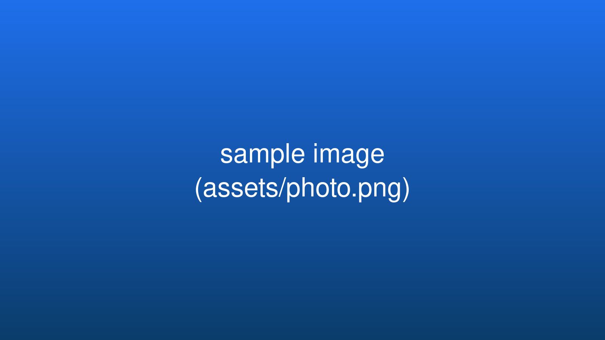

A markdown-driven slide tool — one slide per built-in layout follows.
heading + optional subtitle + Markdown/HTML content
use ::left:: / ::right:: slot markers

Above all else show the data.— Edward R. Tufte
Use it for closing details, contacts, and sources.
A generic padded body — the fallback for any unknown layout name.